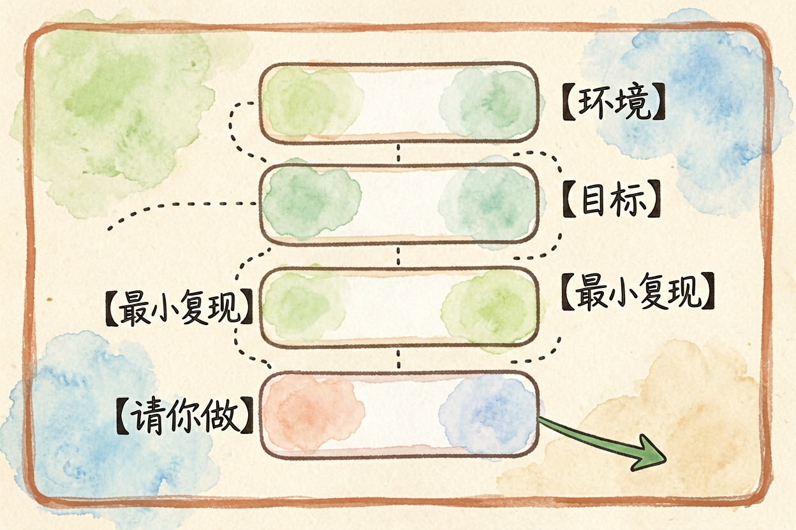
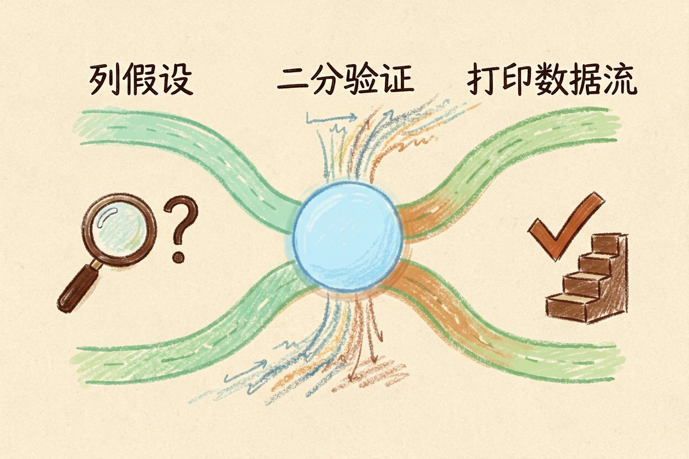

用 AI 调试代码？把报错讲清楚的提问方式 — Learntide
同样一个报错，有人两轮就定位，有人来回问十次还在原地打转，差别常常在描述现场的那几句话。
ai调试代码前，先把现场讲清楚
ai调试代码卡壳，多半不是模型笨，而是你给的信息不够。一句「这段代码报错了帮我看看」，它只能猜。猜出来的改法，通常只动了表面。
调试的本质是缩小范围。范围缩得越小，命中率越高。
动手前补齐五样东西：最小可复现片段、完整报错栈、期望行为、实际行为、运行环境。少一样，来回就多两轮。
报错栈别截断。很多人只贴最后一行，可线索常常藏在中间那几层调用里。
最小可复现片段也有讲究。把无关的业务逻辑删干净，只留能触发报错的那十几行。删的过程本身就是排查，不少人删着删着自己就找到原因了。
一份能直接抄的提问模板

把这五样固定成模板，每次填空即可。
【环境】Python 3.11 / macOS 14 / pandas 2.2.2 / 虚拟环境 venv
【目标】读 CSV 后按用户 ID 分组求和，输出到新表
【最小复现】
import pandas as pd
df = pd.read_csv("orders.csv")
print(df.groupby("user_id")["amount"].sum())
【实际结果】完整报错栈，从第一行贴到最后一行，中间层不要省略
KeyError: 'user_id'
【期望结果】返回每个用户的金额合计
【已排除】文件路径正确；打印 df.columns 发现列名前后带空格
【请你做】先列 3 个可能原因，按可能性排序，逐条说明怎么验证最后一行最关键。你要的是排查方向，而不是一段贴上去就跑的补丁。
让模型先给假设，再动手改

直接索要修复，模型会递给你一个看着合理的改法。它可能改对，也可能只是让报错换了个位置。
稳一点的做法分两步。先让它列假设，再由你去验证。
验证靠二分。把可疑区间对半砍，打印中间变量，看哪一半出问题。砍上两三轮，位置基本就浮出来了。
打印比断点更适合配合模型。你把每一步的输入输出贴回去，它能顺着数据流往回推。断点里的信息留在你脑子里，模型看不见。
碰到并发、死锁、偶发性能抖动这类绕的问题，可以换推理型模型多想一步，区别在推理模型是什么那篇里讲过。
修复要验证，别照单全收
补丁先读懂再合入。读不懂就追问，让它逐行解释。
三个验证动作：原场景重跑一次、边界输入试一次、相邻功能回归一次。
顺手补条测试用例更划算。下次同样的坑，不用再人肉复现。
还要盯副作用。有些改法是把异常吞掉，日志干干净净，问题接着往下游跑。
改动范围也得看住。一处小修被顺手扩成大重构，出了岔子连回滚都费劲。让它只动必要的那几行，其余保持原样。
提问时容易踩的坑
别把整个仓库糊上去。信息越多噪声越大，重点反而被淹没。
别贴带密钥、身份证号、真实用户数据的日志。脱敏再贴，换成假值就行。
也别一路死追同一个错。三轮没进展就回头查前提：版本对不对，依赖装没装，跑的是不是你以为的那份代码。
追问要带新信息。把上一轮验证的结果告诉它，哪个假设排除了，打印出来的值是多少。什么都不补就重问一遍，它多半只是换个说法再猜一次。
排查过的坑随手记一条，攒成自己的排错库，做法看 AI 搭建个人知识库那篇；顺手的工具从 AI 工具导航里挑。说到底，ai调试代码拼的是你把现场描述得多准，提示词花样帮不上什么忙。
本文信息核对于 2026-08-08。AI 产品的价格、免费额度与功能变动频繁，实际以各工具官网当前说明为准。